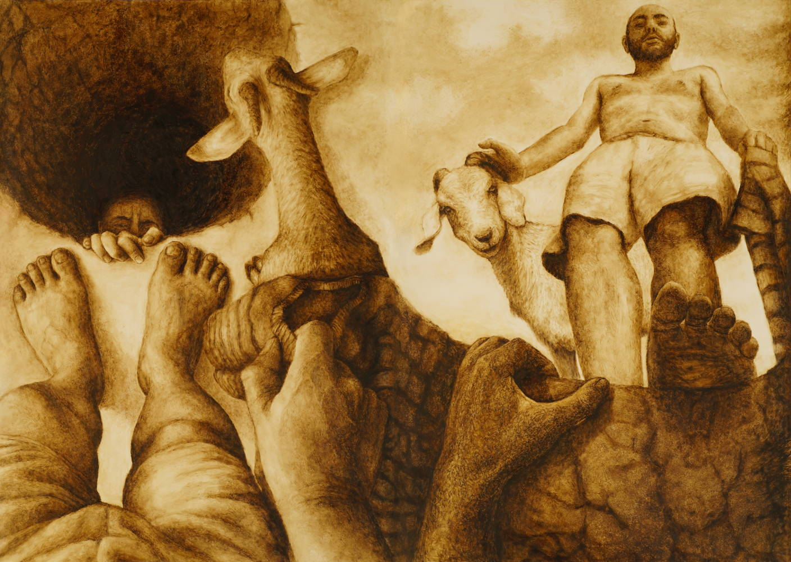

רנסאנס 2.0
הפרויקט שלפנינו פורש את קווי המתאר של חזון זה:
- חזרה אל המגרש של המאסטרים הגדולים והאמנות הגדולה (תרתי משמע), אך מתוך תפיסה חזותית בת זמננו, שלוקחת בחשבון בראש ובראשונה את השינוי האדיר שעברה נקודת המבט: מנקודת מבט אובייקטיבית מחוץ לסצינה לנקודת מבט סובייקטיבית מתוך הסצינה.
- הקומפוזיציה עומדת במרכז העשייה האמנותית, אך היא מושפעת עמוקות מעידן מצלמת הסמארטפון ותרבות הסלפי, תוך דגש על בחירת נקודות מבט המזקקות את מהות הסצינה. למשל, בסיפור 'קין והבל' נבחרו נקודות המבט של השמיים והאדמה, ובסיפור 'המבול' - פנים וחוץ התיבה.
- פרישת נרטיב רחב יריעה שמתפתח לאורך עבודה רחבת יריעה, תוך העדפת המיתוס הקאנוני של התרבות על פני מיתוס האמן המודרני. לפיכך, הסובייקטיביות הנחקרת בציור איננה זו של האמן אלא זו של הדמות, והצופה העובר לאורך העלילה מועמד כל פעם מחדש במקומם של גיבוריה.

רנסאנס 2.0 ואמנות יהודית
מהו היחס בין המסורת של האמנות המערבית לאמנות יהודית? כיצד ניתן להעניק למקרא, הטקסט היהודי המקודש ביותר, יצוג בעל תוקף אמנותי שמתיך את קדושת האמנות והטקסט למהות אחת, כפי שהדבר נעשה לביבליה במסורת האמנות הקלאסית?
האמנות המקומית פנתה לעיתים להצגת המיתוס המקראי באמצעות הוד קדומים אוריינטלי, כמו למשל בעבודותיו של אבל פן, או באמצעות מבע עז: מסוגנן להפליא אצל אפרים משה ליליין או אקספרסיבי מאוד אצל נחום גוטמן. בהמשך היו אמנים ישראליים כמו עדי נס ומתן בן כנען שפנו למהלך הפוך: הצגת גיבורי המיתוס דווקא בקונטקסט בן זמננו ומחולן מאוד. יצירתו של ארצ'י ראנד הניו-יורקי, שמציגה את המקרא כקומיקס, היא דוגמה קיצונית למגמה זו.
הפרויקט שלפנינו מסמן מגמה חדשנית בהיתוך שלו בין ערכי האמנות הקלאסית וייצוג יהודי עכשווי מאוד של המיתוס המקראי. מן הצד של מסורת האמנות, הוא חוזר אל הייצוג הפיגורטיבי המונומנטלי של הנרטיב המיתי הגדול, כפי שניתן לראות אצל ג'וטו בקפלת סקרובני ואצל מיכלאנג'לו בקפלה הסיסטינית. מן הצד השני, הוא בורא לנגד עינינו שפה ויזואלית חדשה לגמרי שבה המיתוס מפוענח מבפנים, בפרספקטיבות מתוך הסצנה, ולרוב מתוך נקודות המבט של הדמויות. כך הוא מסמן את הייצוג הנוצרי כחיצוני ואת זה היהודי כייצוג הבא מבפנים - והמעמיד את הצופה כגיבור האמיתי של הדרמה המיתית. התוצאה היא מעין גרסה יהודית-מודרנית ליצירה רנסאנסית.
ככלל, אידיאת הרנסאנס היא רעיון מפתח שבאמצעותו מתפענח הפרויקט שלפנינו, ועומדת הן מאחורי חיבורו למסורת האמנות והן מאחורי השאיפה לחידושה:
- בניסיון ליצור מעין "קפלה סיסטינית" מודרנית, בת זמננו ובת מקומנו, הפרויקט שואב השראה ישירה מאמנות הרנסאנס ומתכתב איתה לאורך העלילה. למשל, בבחירה המודרנית הפמיניסטית להתחיל מבריאת האישה מצלע האדם, במקום בבריאת האדם, שמסמנת את הולדת המרחב הבין סובייקטיבי והמבט ההדדי כרגע הולדת האנושות, ולא את הולדת האינדיבידואל. מבחינה צורנית, הבחירה לחבר בין סצינות מפרספקטיבות שונות עד כדי סחרור היא השפעה ישירה מהקפלה, אך החיבור הרציף הסוריאליסטי הוא הקצנה פוסטמודרנית, שרואה דווקא בהבדל בין נקודות המבט מרחב משחקי החושף חיבורים נסתרים.
- השאיפה להחייאת העבר הקלאסי, שעומדת בבסיס הפרויקט ובבסיס עולם הרנסאנס, איננה זהה לשאיפה לחזור אליו - ולחזור עליו - שמתבטאת לעיתים בניסיונות ריאקציוניים לחזרה אחורה בציור. דווקא הסינתזה של הפרויקט בין המודרניזם לרנסאנס מהווה המשכיות של רוח הרנאנס, שהיתה בעצמה סינתזה בין העולם הקלאסי לימי הביניים. כפי שאמנות הרנסאנס ראתה בעולם היווני תקופה קלאסית אותה ראוי להחיות לאחר תקופת ניוון, כך הפרויקט מציע להחיות את אמנות הרנסאנס עצמה - ברנסאנס 2.0.